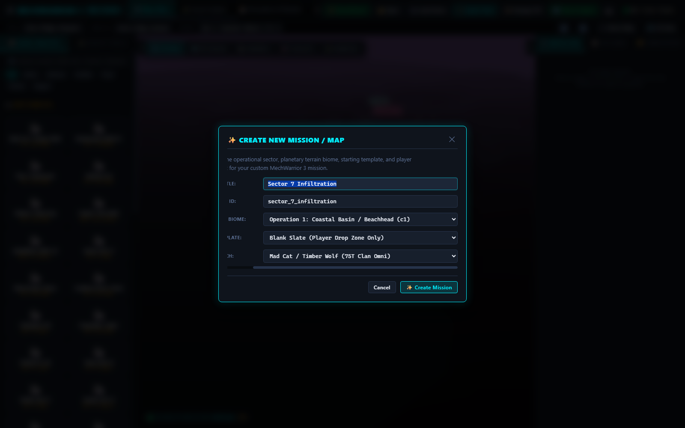

✨ Create New Mission & Project Wizard
Creation Workflow
Authors can start a new custom mission from scratch via the prominent ✨ New Mission button or with Ctrl + N. The creation wizard sets up the mission title, auto-slugifies the internal pack ID, establishes the planetary biome/terrain, chooses a starting layout template, and assigns the player starting BattleMech.
- 3 Starting Templates: Choose between Blank Slate (orbital drop zone only), Defensive Outpost (drop zone + base bunker + radar tower), or Combat Skirmish (drop zone + hostile patrol lance).
- Planetary Biome Setup: One-click selection across all 5 authentic MW3 environments (Coastal, Highlands, Caldera, Glacial, Training Facility).
- Player BattleMech Assignment: Select starting player chassis from Clan and Inner Sphere rosters.
-
📂 Open / Import Support: Import existing
.mw3pack.jsonor project files at any time viaCtrl + O.